Introdução
Conforme detalhado na seção Arquitetura de Software, para execução do Cerrado DPAT são necessárias 3 estruturas criadas e funcionais na máquina do usuário:
-
O Banco de Dados
fip_cerradorestaurado no serviço do PostgreSQL devidamente instalado com a extensão PostGis. -
O serviço OWS Server devidamente configurado e executando em um IP e porta.
-
O Application Server e client (Front-end) da aplicação compilados e executando.
Restaurando e disponibilizando o banco de dados FIP-Cerrado
Para restaurar o banco fip_cerrado no PostgreSQL, é necessário ter o serviço PostgreSQL executando na máquina do usuário. Para tal, pode-se utilizar o tutorial neste link para instalar e executar o PostgreSQL e o PGAdmin3.
Ao final do tutorial, deve-se verificar qual a versão do PostgreSQL instalado (ver: link) e também instalar a extensão do Postgis para a versão adequada de acordo com o tutorial deste link no Step 4: Install PostGIS on Ubuntu 20.04/18.04 / Debian 10.
Com o PostgreSQL e o PostGIS instalados, em seguida é necessário realizar o download do último backup disponibilizado no endereço e extraí-lo.
$ tar -xfv BKP_BANCO_DADOS_FIP_CERRADO.tar.gz
Em seguida, deve-se exportar a variável de senha do banco de dados configurada anteriormente.
$ export PGPASSWORD= <db_password>
Após exportação da senha, deve criar o banco de dados no serviço PostgreSQL. Este passo pode ser realizado por linha de comando ou com ajuda do PGAdmin3. Ambos os passos estão demonstrados abaixo.
$ psql -h <host_address> -U <db_user> -c "create database fip_cerado;"
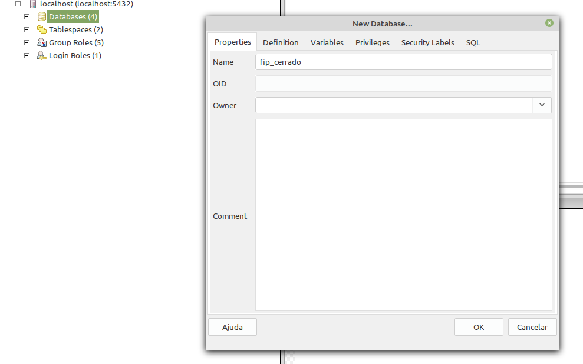
Após a criação do banco de dados, deve-se criar as extensões do PostGis e PlPGSql para uso das funções na aplicação.
$ psql -h <host_address> -U <db_user> -d fip_cerrado -c "create extension postgis;"
$ psql -h <host_address> -U <db_user> -d fip_cerrado -c "create extension plpgsql;"
Agora de fato pode-se restaurar o banco de dados baixado e extraído para a database fip_cerrado criada, o que pode ser alcançada através do comando.
$ pg_restore -U fip_cerrado -h <host_address> -v -j 24 --format=d -C -d fip_cerrado fip_cerrado.sql/
Por fim, com o banco restaurado, deve-se criar/executar algumas funções auxiliares SQL para criação das Materialized Views e algumas funções SQL customizadas para o Cerrado DPAT. Para tal, deve-se acessar o arquivo .sql e executá-lo da seguinte forma:
$ psql -h <host_address> -U <db_user> -d fip_cerrado -a -f <ImportantFunctions.sql>
Deployment do OWS Server
A fim facilitar/automatizar todo o processo de execução do OWS Server foi criado um script que executa todos os passos necessários. Este script deverá executar as seguintes tarefas:
- Download do contâiner do OWS Server presente no endereço
- Cria a estrutura de pastas necessárias (ows-cache, catalog e dpat-files) para funcionamento do OWS Server.
- Constrói a aplicação do OWS Server e a disponibiliza em um IP e porta.
Conforme mencionado anteriormente, a estrutura do OWS Server foi construída com o apoio do Docker, portanto para instalação do mesmo, deve-se seguir os passos definidos nos tutoriais de acordo com o sistema operacional, seja ele Debian ou CentOS. Além do Docker, o script também faz uso das seguintes dependências:
Após instalação do Docker e das dependências mínimas para o script, deve-se executar o script start-ows.sh através do comando:
$ ./start-ows.sh
Inicialmente o script irá pedir ao usuário que informe o local onde o OWS deverá criar a estrutura de pastas necessárias para funcionamento. Na imagem abaixo, o usuário terá informado o caminho /mnt/hd02. É importante ressaltar que este deverá ser um caminho válido na máquina do usuário, porém, como o OWS Server está armazenado em um contâiner Docker, o script irá mapear automaticamente este caminho para /STORAGE dentro da estrutura do Docker.
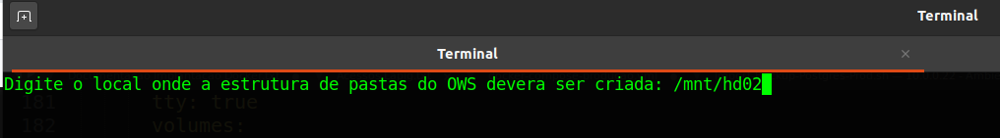
Em seguida, deve-se informar o diretório onde o cache deverá ser armazenado. Na imagem abaixo, o usuário terá informado novamente o caminho /mnt/hd02.
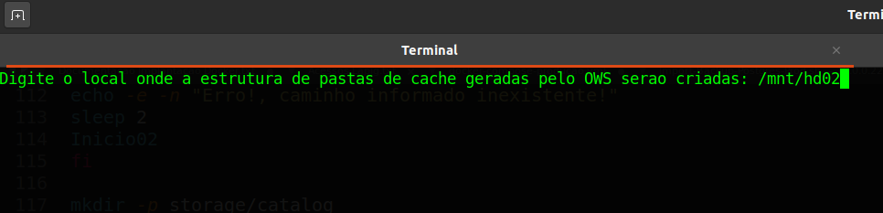
Em seguida, o script irá pedir para que o usuário informe o host (endereço) de onde está rodando o serviço do Banco de dados PostgreSQL, bem como, a porta de execução, o nome do banco de dados e a senha do banco. Estes dados são necessários para configurar o acesso do Mapserver ao banco de dados a fim de criar as camadas de dados vetoriais.
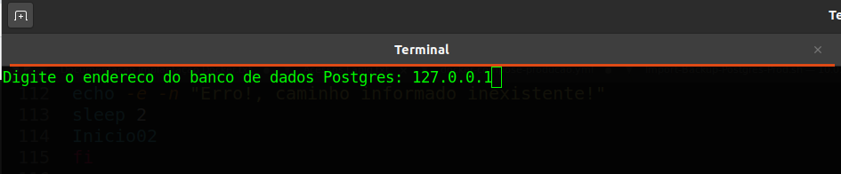
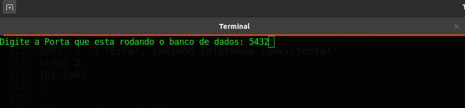
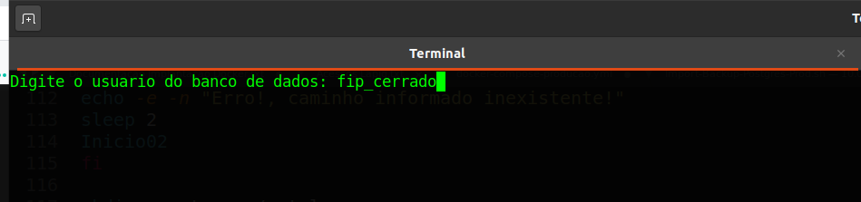
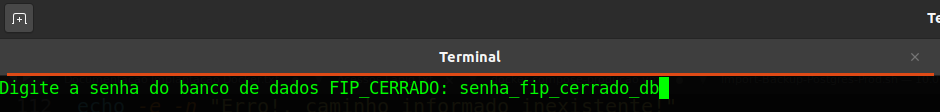
Após a inicialização do das variáveis necessárias para conectar o OWS Server com o banco de dados, o script irá realizar automaticamente o download do contâiner do OWS Server e importá-lo corretamente no Docker instalado na máquina do usuário.
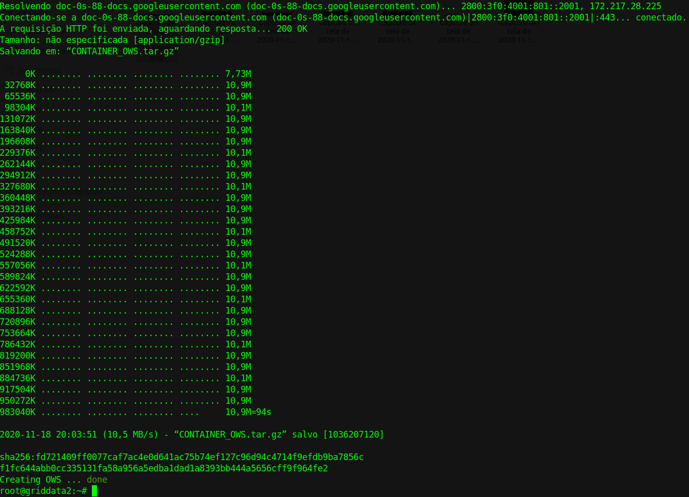
Após a importação correta do contâiner, o OWS Server deverá estar executando e aguardando requisições em localhost ou 127.0.0.1 na porta 5000. A imagem abaixo apresenta um exemplo de requsição feita através do curl no endereço http://127.0.0.1:5000/ows, que recebe uma pequena página HTML criada pelo MapServer.
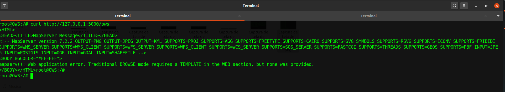
Após a execução do OWS Server, também é necessário mover os arquivos Raster presentes no link para dentro da pasta catalog criada no caminho informado pelo usuário no início do script.
Por fim, vale ressaltar que uma vez que o contâiner do OWS Server esteja configurado e funcionando não é mais necessário executar o script start-ows.sh. Já existe um script na raiz do contâiner que é responsável por executar o OWS Server imediatamente após o contâiner ser inicializado. Portanto, basta executar:
$ docker restart OWS bash
E caso deseja entrar no contâiner e verificar os arquivos internos, tais como logs de requisições, basta executar:
$ docker exec -it OWS bash
$ cd /APP/lapig-maps/src/ows/log
$ tail -f ows-mapserv.log
Deployment da aplicação Cerrado DPAT
Para execução do Cerrado DPAT é importante ressaltar que o Banco de Dados deve estar restaurado e acessível conforme abordado na seção e também deve-se ter o OWS Server funcionando corretamente.
A seguir será abordado duas maneiras de executar a aplicação Cerrado DPAT em ambientes de Desenvolvimento e Produção. Para o ambiente de desenvolvimento será detalhado um passo a passo partindo do pressuposto que um programador irá dar manutenção ou continuidade no Cerrado DPAT. Já o ambiente de produção, será disponibilizado um script que executa todos os passos para disponibilizar o Cerrado DPAT em uma porta da máquina que está sendo executado.
Em seguida, certifique-se de criar corretamente um arquivo .env conforme abordado na seção. Um exemplo de arquivo .env criado durante o processo de execução do script para o ambiente de Produção pode ser observado abaixo:
APP_PRODUCAO='/STORAGE/dpat-files'
CLIENT_DIR='/../client/dist/lapig-dpat/'
LANG_DIR='/lang'
LOG_DIR='/log/'
TMP='/tmp/'
FIELD_DATA_DIR='/campo-dpat/'
UPLOAD_DATA_DIR='/upload-dpat/'
DOWNLOAD_DATA_DIR='/download-dpat/'
PG_USER='db_user'
PG_HOST='127.0.0.1'
PG_DATABASE='fip_cerrado'
PG_PASSWORD='db_password'
PG_PORT='db_port'
PG_DEBUG=true
PORT=3000
OWS_HOST='http://172.18.0.8:5000'
OWS_DOMAINS='http://172.18.0.8:5000'
NDVI_DOMAIN='127.0.0.1:4200'
Ambiente de Desenvolvimento
Assim como abordado na seção, o Cerrado DPAT foi construído com NodeJS como Application Server e Angular como cliente (WebMap Client). Portanto, primeiramente é necessária a instalação destes componentes na máquina do desenvolvedor. Para tal, pode-se seguir o passo-a-passo elaborado neste link
Para execução do Cerrado DPAT em ambiente de desenvolvimento, primeiramente é necessário realizar um fork do projeto para a sua conta pessoal do Github e em seguida executar um git clone do repositório do projeto.
Para inicializar o servidor de aplicação (Application Server) deve-se executar o passo-a-passo descrito na seção. A execução da mesma irá inicializar o Application Server em localhost na porta 3000. Para verificar o seu funcionamento, pode-se realizar a requisição abaixo em um navegador qualquer, que deverá apresentar um resultado semelhante a este.
http://localhost:3000/service/deforestation/largest?year=2019&amount=15
Em seguida, para inicializar o WebMap Client localizado na pasta src/client, basta navegar até a pasta client e instalar as dependências listadas no package.json através do comando:
$ npm install
Após a devida instalação das dependências, pode-se então compilar e inicializar a aplicação. Mais uma vez, a fim de facilitar, foi criado um script start.sh para inicializar o WebMap Client, portanto basta executar:
$ ./src/client/start.sh
Ao finalizar a compilação do projeto, a aplicação estará executando em localhost na porta padrão do Angular, que é a porta 4200. Portanto, para acessar a página Web criada pela aplicação, acesse pelo navegador:
http://localhost:4200
Ambiente de Produção
Em seguida, uma segunda maneira de disponibilizar o Cerrado DPAT é em ambiente de produção. É importante ressaltar que o OWS Server deve estar executando para que o Cerrado DPAT faça as requisições de imagens das diferentes camadas utilizadas pelo sistema.
Para facilitar o processo de deployment em produção, foi criado um script que realiza todos os passos necessários para execução do Cerrado DPAT em produção. Para executar o script basta executar em um Terminal:
$ ./start-dpat.sh
Assim como detalhado na seção de Deployment do OWS Server, este script irá pedir ao usuário que informe os parâmetros endereço, nome, porta, usuário e senha do Banco de Dados, de forma a alterar corretamente o arquivo de configuração do ambiente, .env corretamente.
Em seguida, após pedir as informações do Banco de Dados, o script irá pedir ao usário que informe o local onde a estrutura de pastas do Cerrado DPAT deverá ser criada e também qual o endereço de IP da máquina de produção onde será realizado o deployment assim como informado nas imagens abaixo.
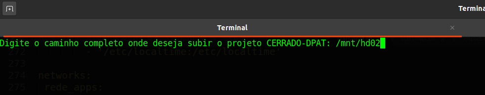
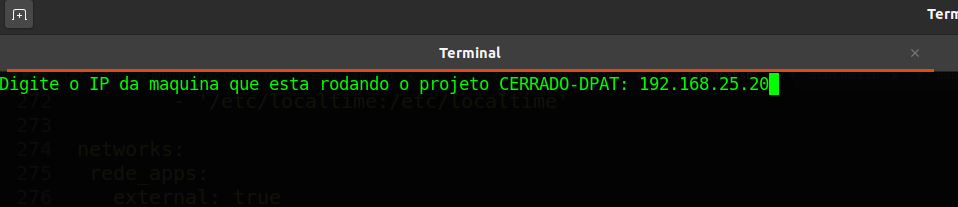
Basicamente o script deverá criar e ajustar automaticamente as variáveis de ambiente do Cerrado DPAT, realizar o download e importação do contâiner docker onde todas as dependências do projeto já estão devidamente ajustadas e executar os passos necessários para compilar e disponibilizar a aplicação no endereço de IP informado na execução do script na porta 3000, assim como apresentado na imagem abaixo.
Script completo com execução completa para Produção
Por fim, também foi criado um script que realiza todos os passos abordados nas seções Deployment do OWS Server e Deployment do Cerrado DPAT. Para tal, basta executar em Terminal.
$ ./start-dpat+ows.sh
Após execução dos scripts o OWS Server estará executando na máquina do usuário na porta 5000 e o Cerrado DPAT também na máquina do usuário na porta 3000.